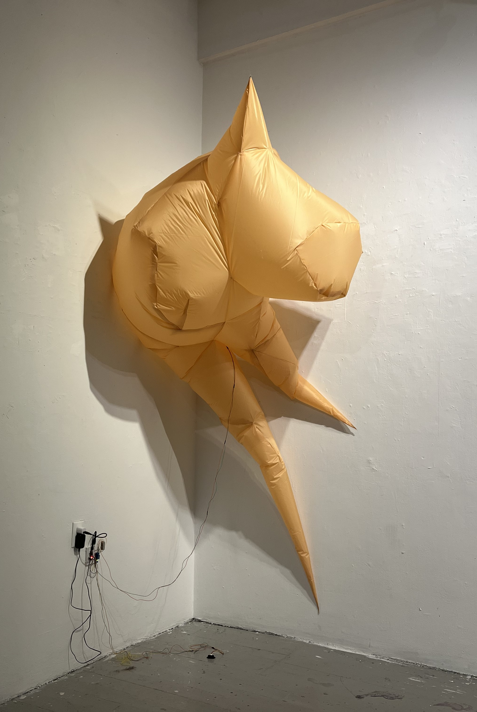
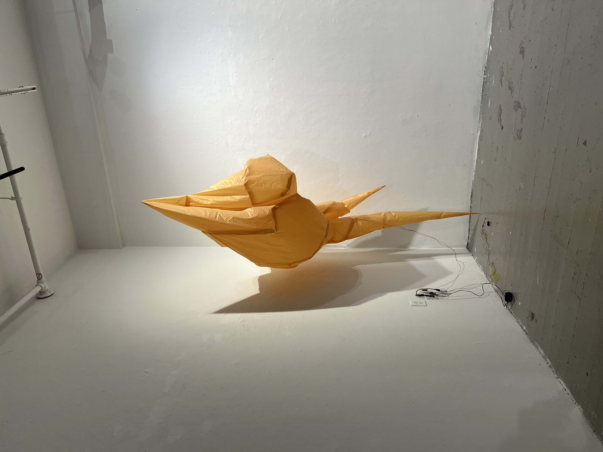
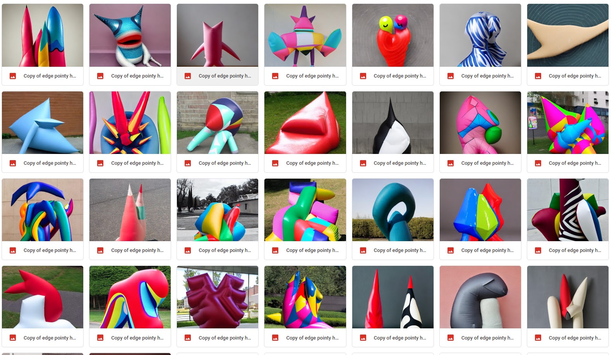
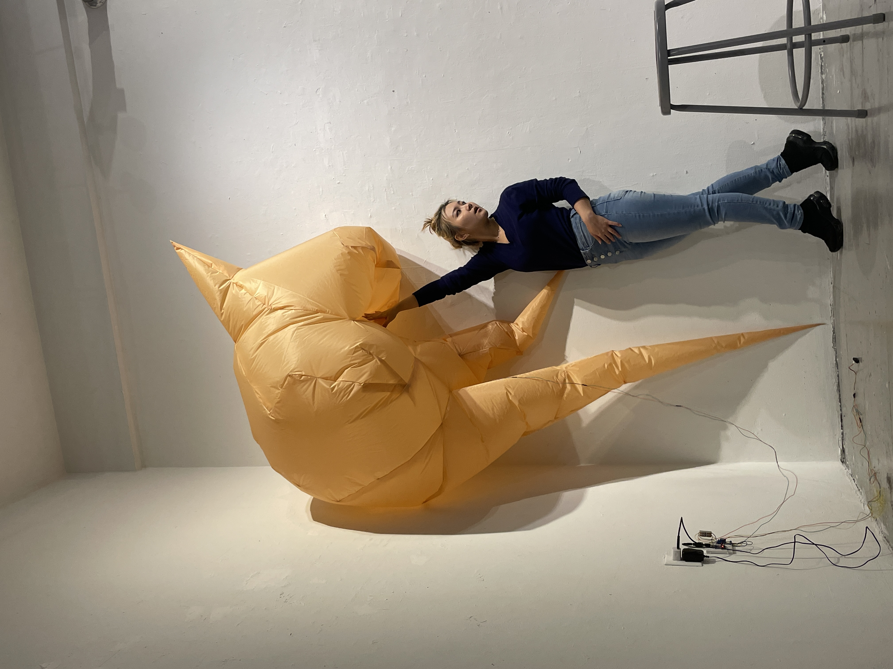

Mirage
-

Mirage (2023 - Present)-
A relationship with a particular person can be akin to a mirage - from a certain distance, it appears perfect and beautiful, like a shimmering oasis. However, upon closer examination, this illusion is revealed to be nonexistent from the outset. Despite recognizing the illusory nature of the mirage each time, we quickly forget and fall prey to its allure again and again, repeating the same mistake.
The piece is interactive and responds to the audience's proximity. It will inflate and deflate based on the distance between the piece and the observer, creating an immersive and dynamic experience.
- 
- 
- 
-
To create an object that represents complex feelings towards a mirage-like person or a realtionship,
I utilized an Artificial Intelligence Shape Generator as a reference.
This tool assisted me in designing a form that encapsulated conflicting emotions.
During the experiment, I inputted various contradictory emotions into the generator
such as vulnerability, approachability, softness, hurt, and sharpness.
The intention was to incorporate unique emotions into the object's design,
while also keeping the person and relationship it represented undisclosed.
My aim was to encourage the audience to evoke their own emotions and ponder a similar situation to mine,
and experience the same sentiments. The AI generator provided a plethora of forms based on the prompts I provided.
Relying on a larger database facilitated the creation of a shape that embodies my emotions and elicits empathy from the audience. - 
Deisgn Philosophy